2．公元200—1200年时期印度的算术和代数
印度数学的第二段时期（高潮时期）大致可以说是从公元200到1200年。这时期的第一阶段，亚历山大的文明肯定对印度人有影响。公元500年左右的一位印度天文学家瓦拉哈米希拉（Varāhamihira）说：“希腊人虽不纯正［凡信仰不同的人都是不纯正的］但必须受到崇敬，因他们对科学训练有素并在这方面超过他人。那么对于一个既纯正而又有科学高见的婆罗门又该怎么说呢？”印度人的几何肯定是从希腊来的，但他们在算术上确有特殊的才能。至于代数他们也许是从亚历山大袭取的，并且可能直接得自巴比伦；但在这方面他们也按自己的道路走得相当远。印度从中国方面也颇有借鉴之处。
第二阶段中最重要的数学家是阿里亚伯哈塔（Āryabhata，生于476年）、婆罗摩笈多（生于598年）、筏驮摩那（Mahāvīra，9世纪，又译“马哈维拉”）和婆什迦罗（Bhāskara，生于1114年）。他们以及其他印度数学家的大部分工作一般是为了研究天文和占星术而产生的。事实上他们没有写专门的数学书，数学材料是夹在天文著作的篇章里讲述的。
迄公元600年为止，印度人写数的方法很多，有的甚至用字和音节来表示数。到600年他们又回到较老的婆罗米式记号，但这些记号的确切形式在整个时期内是不定的。以10为底的进位记法已经在有限范围内使用了约一百年，到这时就通用了。早先亚历山大希腊人只用0来表示哪一位上没有数，如今在印度人那里0被看成是一个完全的数了。筏驮摩那说一数乘以0得0，并说减去0并不使一数变小。但他又说一数除以0后不变。婆什迦罗在谈到分母为0的分数时，说不管加减多少，这个分数是不变的，正如万世不易的神不会因世界的创生和毁灭而有所改变。他又说一数除以0称为无穷量。
至于天文上的分数，印度人是用60进制记法的。其他方面的分数他们用整数之比来表示，但没有用横线，例如
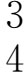
。印度人的算术运算同我们的很像。例如，筏驮摩那给出我们今日的除以分数的法则：把分数颠倒相乘。
印度人引用负数来表示欠债，在这种情况下，正数表示财产数。据今日所知，最早用负数的是628年左右的婆罗摩笈多，他又提出了负数的四种运算。婆什迦罗指出正数的平方根有两个，一正一负。他也提到负数的平方根的问题，但说负数没有平方根，因为负数不能是平方数。他们没有给出定义、公理或定理。
印度人并没有毫无保留地接受负数。甚至当婆什迦罗给出一个问题的两个解50与-5时，他说：“这里不要第二个数值，因为它不行；人们不赞成负数的解。”然而负数终于逐渐为人所接受。
印度人在算术上采取的另一重大步骤是正视了无理数问题；就是说他们开始按正确手续来运算这些数，这种做法虽未经一般的证明，但可使人由此获得有用的结论。例如，婆什迦罗说：“两个无理数之和叫做较大的无理数；而其乘积的两倍叫做较小的。它们的和与差是照整数那样来算的。”然后他指出怎样把无理数相加如下：设有无理数
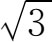
和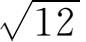
，则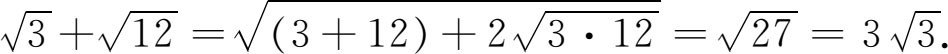
其一般原理是（用我们的记号）：
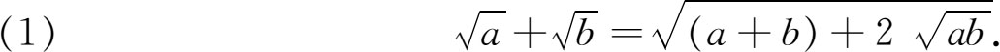
我们应注意上述引文中“照整数那样来算”的话。无理数是当作具有整数那种性质的数来对待。例如，若有整数c及d，则肯定可以写
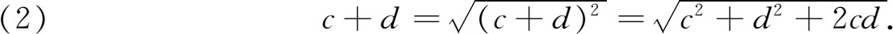
今若
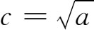
而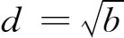
，则（2）正好就是（1）。婆什迦罗又给出两个无理数相加的法则：“较大的无理数除以较小的，所得之商开方，再加1，和数取平方，然后乘以较小的无理数，其根即为两无理数之和。”举例来说，这就是
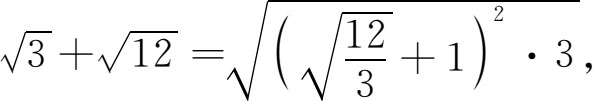
结果得
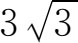
。他又给出无理式的乘、除以及开平方的法则。印度人不像希腊人那样细致，因为他们看不出无理数概念所牵涉的逻辑难点。他们对计算的兴趣使他们忽视了哲学上的区别或希腊人认为属于基本的那些原理上的区别。他们随着兴致所至把适用于有理数的运算步骤用到无理数上去，这样做却帮助数学取得进展。此外，他们的整个算术是完全独立于几何的。
印度人也在代数上获得一些进展。他们用缩写文字和一些记号来描述运算。像在丢番图的著作中一样，他们不用加法记号；被减数上面加个点表示减法；其他运算用主要文字或缩写表示；例如ka是从karana这个字来的，表示对其后的数开平方。当有一个以上的未知量时，他们用颜色的名称来代表。例如第一个叫未知量，其他的就叫黑的、蓝的、黄的等。每个字的头一个字母也被他们拿来作为记号。这套记号虽然不多，但足够使印度代数几乎称得上是符号性的代数，并且符号肯定比丢番图的缩写代数用得多。他们的问题和解答都是用这种半符号方式写出的，但只写出运算步骤，没有随即说明理由或证明。
印度人认识到二次方程有两个根，而且包括负根和无理根。丢番图分别处理的三类二次方程
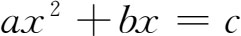
，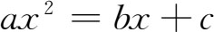
，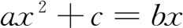
（a，b，c为正数），在印度人那里作为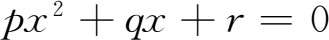
一种情形来处理，因为他们允许某些系数是负数。他们利用配方法，这当然不是他们首创的。由于并不承认负数有平方根，所以他们不能解所有的二次方程。筏驮摩那还解出过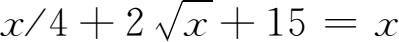
，这是从一个文字题得出的方程。在不定方程方面印度人超过了丢番图。这种方程出现在天文问题里，它们的解就是某些星座出现于天空的时间。印度人要求出所有的整数解，而丢番图则只得出一个有理的解。求
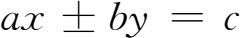
（a，b，c是正整数）的整数解的方法是阿里亚伯哈塔最先提出并由他的后继者加以改进的。它和现代方法一样。我们考察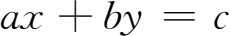
。若a及b有公因子m，而这m又不能除尽c，那就不可能有整数解，因左边能为m整除而右边却不能。若a，b及c有一公因子，那就把它约去，由此，我们就只要考虑a与b互质的情形就行了。但在求a与b两整数的最大公因子时（a＞b），欧几里得算法要求先用b除a而有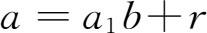
，此处a1为商而r为余数。因此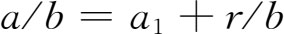
。这又可写为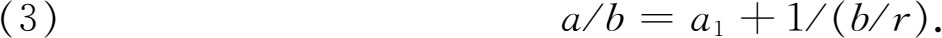
欧几里得算法第二步是以r除b。于是
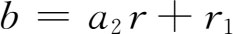
，或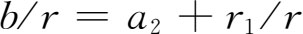
。若把这b/r值代入（3），便可写成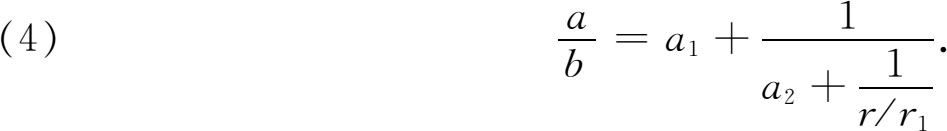
继续做欧几里得算法的结果，得所谓连分数
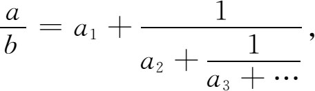
这也可写成
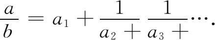
这个步骤在a＜b时也可用。这时a1是零，而以后各步仍照以前那样往下做。若a及b是整数，连分数是有尽头的。
取到第一、第二、第三乃至一般第n个商为止的分数，分别叫第一、第二、第三和第n个收敛子。由于在a及b为整数的情形下连分数是有尽的，故有一收敛子正好在a/b的准确表达式的前面。若p/q是这收敛子的值，则可证
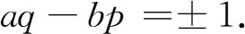
我们来考察上式中取正值的情形。我们可以回到原来那个不定方程。由于aq-bp＝1，故可写
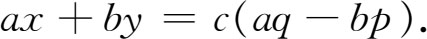
整理各项后，得
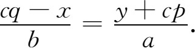
若以t代表上述分数，得
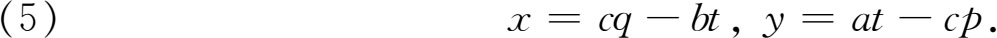
现在就可给t指定整数值，于是由于其他所有的量都是整数，这样就可以得出x和y的整数值。
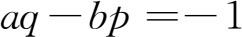
的情形以及原方程是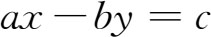
的情形，只要对上法稍作改变，就可处理。婆罗摩笈多给出了（5）的解，但当然不是用一般字母a，b，p和q来表示的。印度人也研究二次不定方程。他们解出了
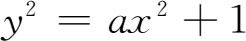
（其中a不是平方数），这种类型的方程，并可看出这种类型对处理
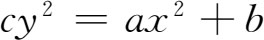
很重要。所用的方法太特殊，不值得在这里介绍。
值得指出的是他们对许多数学问题兴趣很浓，常用故事或诗歌的形式提出来，或夹杂在历史读物中，来吸引人们。他们之所以要这样写，原来的目的可能是为帮助记忆，因为婆罗门的老习惯是把事情记在心上而尽可能避免写在纸上。
代数被应用在普通商业问题上——算利息、折扣、合股分红、财产划分，但主要的用途是在天文上。